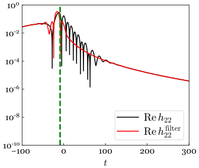
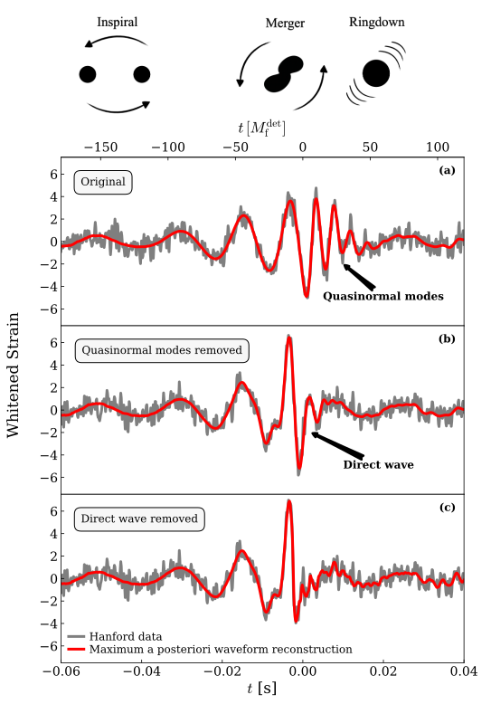
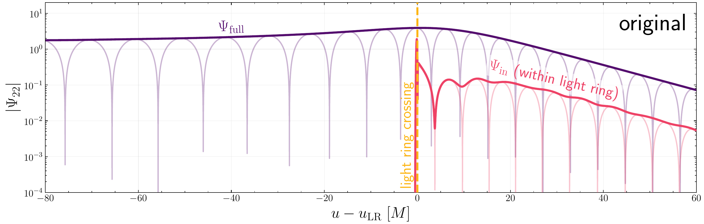
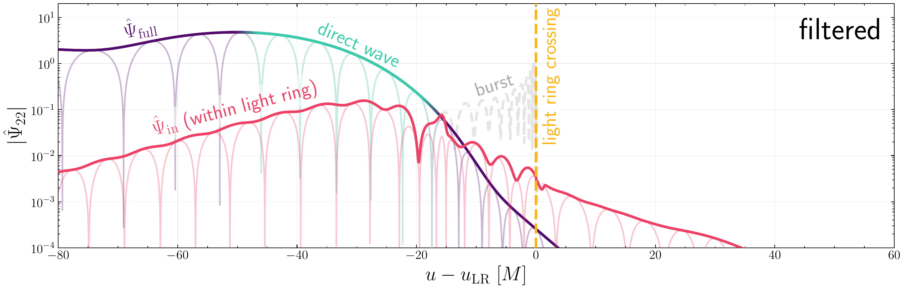

On the direct wave and whether it is
a near-horizon probe
a near-horizon probe
Mark Ho-Yeuk Cheung
9 October 2026
Simons Collaboration on Black Holes and Strong Gravity
Spacetime working group presentation
Simons Collaboration on Black Holes and Strong Gravity
Spacetime working group presentation
The rational filter
$$\mathcal{F}(\omega) = \prod_{lmn} \frac{\omega - \omega_{lmn}}{\omega - \omega_{lmn}^{*}}$$

Ma+ (2207.10870)frequency domain
$$\tilde{\Psi}(\omega) \xrightarrow{\text{filter}} \frac{\omega - \omega_{\ell mn}}{\omega - \omega_{\ell mn}^*}\,\tilde{\Psi}(\omega)$$
$$\phantom{\tilde{\Psi}(\omega) \xrightarrow{\text{filter}}} = \left[1 - \frac{\omega_{\ell mn} - \omega_{\ell mn}^*}{\omega - \omega_{\ell mn}^*}\right]\tilde{\Psi}(\omega)$$
time domain
$$\Psi(t) \xrightarrow{\text{filter}} \Psi(t) - \frac{\displaystyle\int_0^\infty e^{i\omega_{\ell mn}^*\tau}\,\Psi(t+\tau)\,d\tau}{\displaystyle\int_0^\infty e^{i\omega_{\ell mn}^*\tau}\,e^{-i\omega_{\ell mn}\tau}\,d\tau}$$
See the appendix of Cheung (2608.29466)
$$\Psi(t) \xrightarrow{\text{filter}} \Psi(t) - {\color{transparent}\underbrace{\color{black}\frac{\displaystyle\int_0^\infty e^{i\omega_{\ell mn}^*\tau}\,\Psi(t+\tau)\,d\tau}{\displaystyle\int_0^\infty e^{i\omega_{\ell mn}^*\tau}\,e^{-i\omega_{\ell mn}\tau}\,d\tau}}_{\text{least squares QNM fit}}}$$
$$\Psi(t) \xrightarrow{\text{filter}} \Psi(t) - {\color{#d62728}\underbrace{\color{black}\frac{\displaystyle\int_0^\infty e^{i\omega_{\ell mn}^*\tau}\,\Psi(t+\tau)\,d\tau}{\displaystyle\int_0^\infty e^{i\omega_{\ell mn}^*\tau}\,e^{-i\omega_{\ell mn}\tau}\,d\tau}}_{\text{least squares QNM fit}}}$$
$$= \Psi(t) - \textcolor{#d62728}{A_{\rm fit}(t)}$$
See the appendix of Cheung (2608.29466)
$\omega = \omega_{\ell mn}$
$$\Psi(t) \xrightarrow{\text{filter}} \textcolor{#1f4e9c}{\Psi(t)} - \textcolor{#d62728}{A_{\rm fit}(t)}$$
original
filtered
$$|\mathcal{F}(\omega)| = \left|\frac{\omega - \omega_{220}}{\omega - \omega_{220}^*}\right| = 1$$
$\omega \neq \omega_{\ell mn}$
$$\Psi(t) \xrightarrow{\text{filter}} \textcolor{#1f4e9c}{\Psi(t)} - \textcolor{#d62728}{A_{\rm fit}(t)}$$
original
filtered
original
filtered
- The filter redistributes power in time, $|\mathcal{F}(\omega)| = 1$.
- If the waveform is a clean QNM after time $t_0$, the filter removes it cleanly and deposits the power to earlier times $t < t_0$.
- The filter rescales the amplitude of other QNMs.
Direct waves
 Oshita+ (2509.09165)
Oshita+ (2509.09165)
 Lu+ (2510.01001)
Lu+ (2510.01001)
GW250114

Lu+ (2510.01001)Horizon modes
$G(r_p)\,S(r_p) \sim e^{-im\Omega_H u}\,$$\Big[$$\color{#ee4266}c_1\epsilon$${}+{}\color{#ff8c00}c_2\epsilon^2$${}+{}\color{#2a9d8f}c_3\epsilon^3$${}+{}\color{#3a86ff}c_4\epsilon^4$${}+{}\color{#8338ec}c_5\epsilon^5$${}+{}\cdots$$\Big]$
$\epsilon \equiv r_p(u) - r_+ \propto e^{-\kappa u}$
Horizon modes are screened
Kerr, unfiltered
Zimmerman+ (1106.0782)
$$\psi_4\sim\int\! d\omega\,e^{-i\omega u}\left[\frac{\tilde Z_1}{\omega-\omega_H^{(1)}}+\frac{\tilde Z_2}{\omega-\omega_H^{(2)}}+\cdots\right]$$$$\tilde Z_1\propto(\omega-\omega_H^{(1)})(\omega-\omega_H^{(2)})$$$$\tilde Z_2(\omega_H^{(2)})\mathrel{\overset{?}{\neq}}0$$
Kerr, filtered(?)
Oshita+ (2509.09165)
$$\psi_4\sim\hat D(\omega_G)\,e^{-i\int^u\omega_G\,du'}$$$$\hat D(\omega)=\frac{(\omega-\omega_H^{(1)})(\omega-\omega_H^{(2)})}{2i\omega B^{\rm in}(\omega)}$$
Schwarzschild, unfiltered
Kuntz+ (2606.07173)
$$\int\! d\omega\,e^{-i\omega u}\,G(\omega)$$$$\times\int^{\tilde t(u)}\!\! dt\,S(t)\,e^{i\omega t}=0$$
Schwarzschild, filtered
Ma+ (2607.06677)
$$\Psi_{\rm DW}=\sum_n E_n e^{-i\bar\omega_n u}\!\int_{r_+}^{R_{\rm min}(u)}\!\!(\dots)$$$$\approx e^{-i\int^u\omega_G\,du'}$$
Kerr, filtered
Sun+ (2608.23209)
Weller+ (2609.09531)
$$\Psi_{\rm DW}\sim\int\! d\omega\,e^{-i\omega u}\,\mathcal F(\omega)\,\frac{\tilde{\mathcal I}(\omega)}{i\omega B^{\rm in}(\omega)}$$
$\omega_{\rm DW}(u)\to\omega_H^{(2)}$
$\omega_{\rm DW}(u)\to\omega_H^{(3)}$
Kerr, unfiltered
Kubota+ (2609.07326)
$$h\sim\int\! d\omega\,e^{-i\omega u}\,\Pi(\omega)\!\int\! dt'\,e^{iP(\omega,t')}$$$$\Pi\propto\frac{(\omega-\omega_H^{(1)})(\omega-\omega_H^{(2)})}{B^{\rm inc}(\omega)}$$
See also: De Amicis+ (2506.21668), Rosato+ (2603.20490), Giataganas+ (2609.27920)
Three questions
Will we see horizon modes at late times?
No, they are screened.
Will the filtered/unfiltered waveform approach an $\omega_H^{(n)}$ at intermediate times? Which $\omega_H^{(n)}$?
Filtered: Oshita+ (2509.09165), Lu+ (2510.01001), Kankani+ (2603.15474), Kankani+ (2607.02380), Han+ (2607.08570), Sun+ (2608.23209), Weller+ (2609.09531)
Unfiltered: Chung+ (2606.06592), Dyer+ (2606.25021)
Is most of the filtered waveform sourced near the horizon?
No. Cheung (2608.29466) accepted by PRD
point particle plunge
$$\Psi(t) \xrightarrow{\text{filter}} \textcolor{#1f4e9c}{\Psi(t)} - \textcolor{#d62728}{A_{\rm fit}(t)}$$
original
filtered
filtering non-QNM waveforms $\rightarrow$ nontrivial redistribution of power
direct wave
SNR $\sim 0.7$ for GW250114 from within light ring

 Cheung (2608.29466)
Cheung (2608.29466)
Closing statements
- The rational filter redistributes waveform power in time
- What we call the direct wave is simply the few decaying cycles of the redistributed QNM power
- Direct waves are not as “direct” as we think they are
- However, I will not call the filtered waveform “unphysical”
- Studying the filtered waveform could still be insightful
- The rational filter remains to be a superb tool


Cheung (2608.29466)